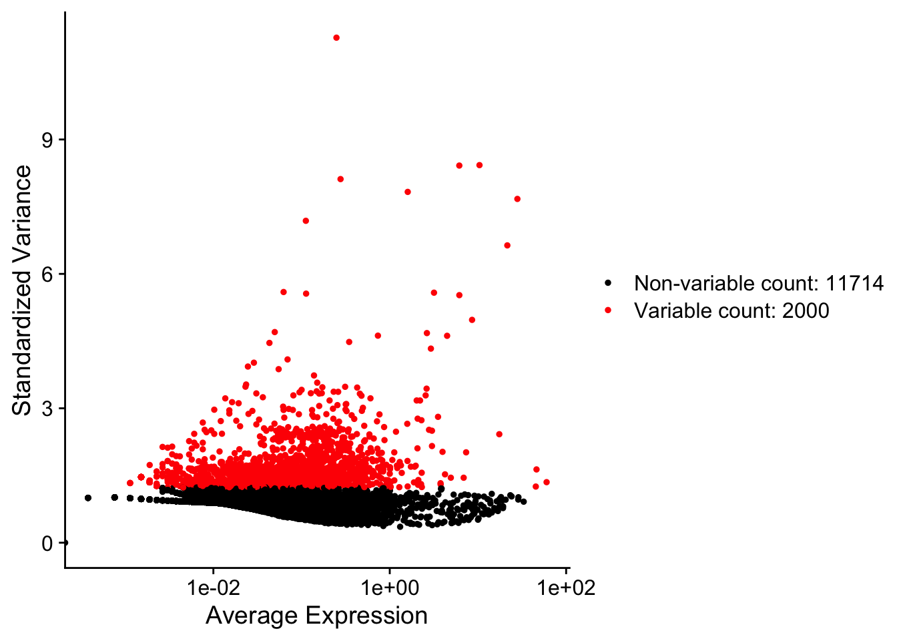
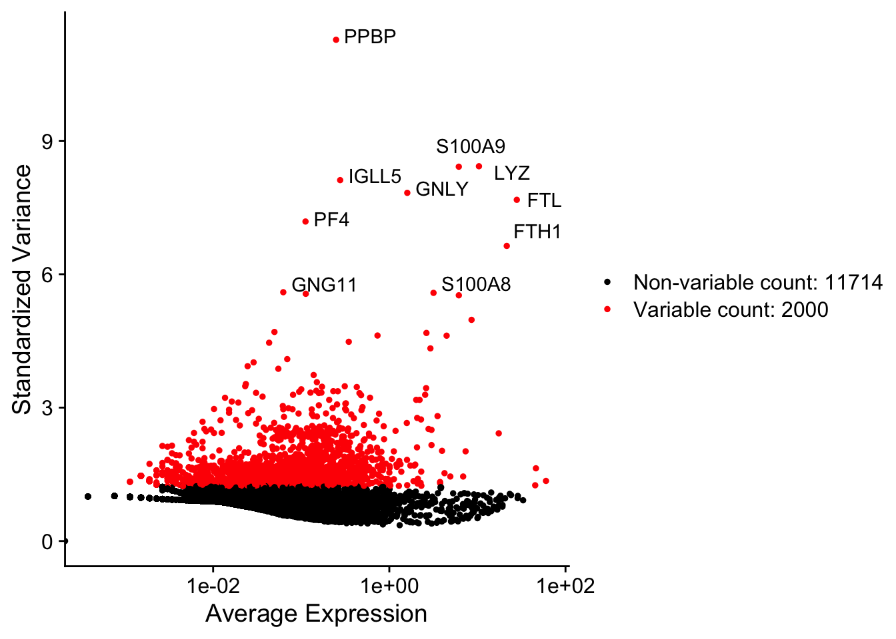
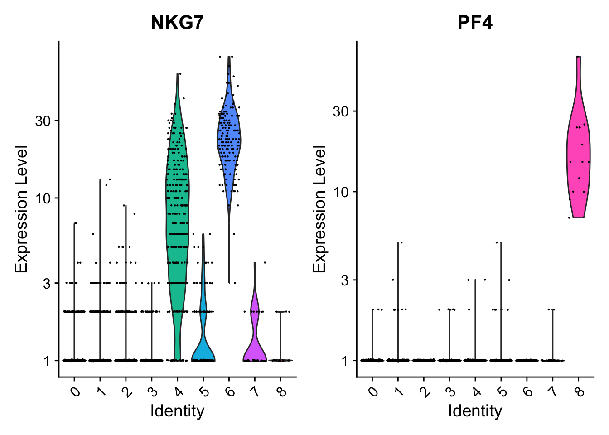
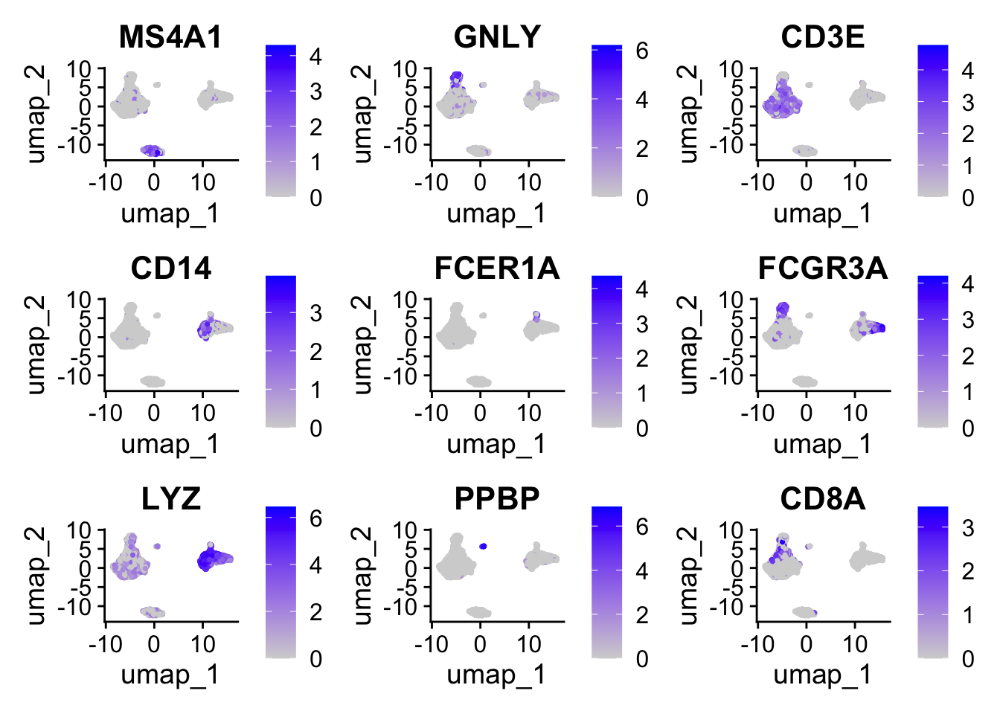

library(Seurat)# 读取PBMC数据集pbmc.data<-Read10X(data.dir ="data/seurat_official/filtered_gene_bc_matrices/hg19")# Initialize the Seurat object with the raw (non-normalized data).pbmc<-CreateSeuratObject(counts =pbmc.data, project ="pbmc3k", min.cells =3, min.features =200)pbmc
An object of class Seurat
13714 features across 2700 samples within 1 assay
Active assay: RNA (13714 features, 0 variable features)
1 layer present: counts
Low-quality cells or empty droplets will often have very few genes
Cell doublets or multiplets may exhibit an aberrantly high gene count
Similarly, the total number of molecules detected within a cell (correlates strongly with unique genes)
The percentage of reads that map to the mitochondrial genome
Low-quality / dying cells often exhibit extensive mitochondrial contamination
We calculate mitochondrial QC metrics with the PercentageFeatureSet() function, which calculates the percentage of counts originating from a set of features
We use the set of all genes starting with MT- as a set of mitochondrial genes
An object of class Seurat
13714 features across 2638 samples within 1 assay
Active assay: RNA (13714 features, 0 variable features)
1 layer present: counts
3 标准化（Normalizing）
After removing unwanted cells from the dataset, the next step is to normalize the data. By default, we employ a global-scaling normalization method “LogNormalize” that normalizes the feature expression measurements for each cell by the total expression, multiplies this by a scale factor (10,000 by default), and log-transforms the result. 标准化的方法是每个细胞中的基因表达量除以该细胞的基因总表达量，然后乘以比例因子（通常是1000），最后将这个结果取对数。
In Seurat v5, Normalized values are stored in pbmc[["RNA"]]$data：
Tip
While this method of normalization is standard and widely used in scRNA-seq analysis, global-scaling relies on an assumption that each cell originally contains the same number of RNA molecules. We and others have developed alternative workflows for the single cell preprocessing that do not make these assumptions.
SCTransform() normalization workflow 就是这样的一种工作流. 针对这一方法的原始文献：(Choudhary and Satija 2022) 。基于SCTransform的数据标准化流程中，无需使用上面的NormalizeData, 和下面的FindVariableFeatures和ScaleData函数。详见后面的章节。
4 识别高变基因（highly variable features）
We next calculate a subset of features that exhibit high cell-to-cell variation in the dataset (i.e, they are highly expressed in some cells, and lowly expressed in others). We and others (Brennecke et al. 2013) have found that focusing on these genes in downstream analysis helps to highlight biological signal in single-cell datasets.
Our procedure in Seurat is described in detail here (Stuart et al. 2019) , and improves on previous versions by directly modeling the mean-variance relationship inherent in single-cell data, and is implemented in the FindVariableFeatures() function. By default, we return 2,000 features per dataset. These will be used in downstream analysis, like PCA.
pbmc<-FindVariableFeatures(pbmc, selection.method ="vst", nfeatures =2000)# Identify the 10 most highly variable genestop10<-head(VariableFeatures(pbmc), 10)# plot variable features with and without labelsplot1<-VariableFeaturePlot(pbmc)plot1LabelPoints(plot =plot1, points =top10, repel =TRUE)

(A) 前2000个高变基因

(B) 前2000个高变基因（标注了前10个高变基因）
Figure 1: 识别高变基因
5 归一化（Scaling）
Next, we apply a linear transformation (‘scaling’) that is a standard pre-processing step prior to dimensional reduction techniques like PCA. The ScaleData() function:
Shifts the expression of each gene, so that the mean expression across cells is 0（每个基因在所有细胞的平均表达量为0）
Scales the expression of each gene, so that the variance across cells is 1. This step gives equal weight in downstream analyses, so that highly-expressed genes do not dominate
# 不运行all.genes<-rownames(pbmc)pbmc<-ScaleData(pbmc, features =all.genes)
去除单细胞数据中的非期望变异来源
In Seurat, we also use the ScaleData() function to remove unwanted sources of variation from a single-cell dataset. For example, we could ‘regress out’ heterogeneity associated with (for example) cell cycle stage (见消除细胞周期的影响), or mitochondrial contamination i.e.:
However, particularly for advanced users who would like to use this functionality, we strongly recommend the use of our new normalization workflow, SCTransform(). The method is described in our paper (Choudhary and Satija 2022). As with ScaleData(), the function SCTransform() also includes a vars.to.regress parameter (见运行SCTransform).
6 线性降维
Next we perform PCA on the scaled data. By default, only the previously determined variable features are used as input, but can be defined using features argument if you wish to choose a different subset (if you do want to use a custom subset of features, make sure you pass these to ScaleData first).
For the first principal components, Seurat outputs a list of genes with the most positive and negative loadings, representing modules of genes that exhibit either correlation (or anti-correlation) across single-cells in the dataset.
Seurat provides several useful ways of visualizing both cells and features that define the PCA, including VizDimReduction(), DimPlot(), and DimHeatmap() .
In particular DimHeatmap() allows for easy exploration of the primary sources of heterogeneity in a dataset, and can be useful when trying to decide which PCs to include for further downstream analyses. Both cells and features are ordered according to their PCA scores.
Setting cells to a number, will plot the ‘extreme’ cells on both ends of the spectrum, which dramatically speeds plotting for large datasets. Though clearly a supervised analysis, we find this to be a valuable tool for exploring correlated feature sets.
To overcome the extensive technical noise in any single feature for scRNA-seq data, Seurat clusters cells based on their PCA scores, with each PC essentially representing a ‘metafeature’ that combines information across a correlated feature set. The top principal components therefore represent a robust compression of the dataset. However, how many components should we choose to include? 10? 20? 100?
In Macosko et al(Macosko et al. 2015), we implemented a resampling test inspired by the JackStraw procedure. While still available in Seurat, this is a slow and computationally expensive procedure, and we is no longer routinely used in single cell analysis.
An alternative heuristic method generates an ‘Elbow plot’: a ranking of principle components based on the percentage of variance explained by each one. In this example, we can observe an ‘elbow’ around PC9-10, suggesting that the majority of true signal is captured in the first 10 PCs.
Identifying the true dimensionality of a dataset can be challenging/uncertain for the user. We therefore suggest these multiple approaches for users. The first is more supervised, exploring PCs to determine relevant sources of heterogeneity, and could be used in conjunction with GSEA for example. The second (ElbowPlot). The third is a heuristic that is commonly used, and can be calculated instantly. In this example, we might have been justified in choosing anything between PC 7-12 as a cutoff.
We chose 10 here, but encourage users to consider the following:
Dendritic cell and NK aficionados may recognize that genes strongly associated with PCs 12 and 13 define rare immune subsets (i.e. MZB1 is a marker for plasmacytoid DCs). However, these groups are so rare, they are difficult to distinguish from background noise for a dataset of this size without prior knowledge.
We encourage users to repeat downstream analyses with a different number of PCs (10, 15, or even 50!). As you will observe, the results often do not differ dramatically.
We advise users to err on the higher side when choosing this parameter（建议选择偏高的主成分数量）. For example, performing downstream analyses with only 5 PCs does significantly and adversely affect results.
8 细胞聚类（cluster）
Seurat applies a graph-based clustering approach, building upon initial strategies in Macosko et al(Macosko et al. 2015). Importantly, the distance metric which drives the clustering analysis (based on previously identified PCs) remains the same. However, our approach to partitioning the cellular distance matrix into clusters has dramatically improved. Our approach was heavily inspired by recent manuscripts which applied graph-based clustering approaches to scRNA-seq data and CyTOF data (Levine et al. 2015). Briefly, these methods embed cells in a graph structure - for example a K-nearest neighbor (KNN) graph, with edges drawn between cells with similar feature expression patterns, and then attempt to partition this graph into highly interconnected ‘quasi-cliques’ or ‘communities’.
As in PhenoGraph, we first construct a KNN graph based on the euclidean distance in PCA space, and refine the edge weights between any two cells based on the shared overlap in their local neighborhoods (Jaccard similarity). This step is performed using the FindNeighbors() function, and takes as input the previously defined dimensionality of the dataset (first 10 PCs).
To cluster the cells, we next apply modularity optimization techniques such as the Louvain algorithm (default) or SLM (Blondel et al. 2008), to iteratively group cells together, with the goal of optimizing the standard modularity function. The FindClusters() function implements this procedure, and contains a resolution parameter that sets the ‘granularity’ of the downstream clustering, with increased values leading to a greater number of clusters. We find that setting this parameter between 0.4-1.2 typically returns good results for single-cell datasets of around 3K cells. Optimal resolution often increases for larger datasets.
Modularity Optimizer version 1.3.0 by Ludo Waltman and Nees Jan van Eck
Number of nodes: 2638
Number of edges: 95905
Running Louvain algorithm...
Maximum modularity in 10 random starts: 0.8735
Number of communities: 9
Elapsed time: 0 seconds
The clusters can be found using the Idents() function. 或者通过seurat@active.ident获取。
# Look at cluster IDs of the first 5 cellshead(Idents(pbmc), 5)
Seurat offers several non-linear dimensional reduction techniques, such as tSNE and UMAP, to visualize and explore these datasets. The goal of these algorithms is to learn underlying structure in the dataset, in order to place similar cells together in low-dimensional space. Therefore, cells that are grouped together within graph-based clusters determined above should co-localize on these dimension reduction plots.
While we and others have routinely found 2D visualization techniques like tSNE and UMAP to be valuable tools for exploring datasets, all visualization techniques have limitations, and cannot fully represent the complexity of the underlying data. In particular, these methods aim to preserve local distances in the dataset (i.e. ensuring that cells with very similar gene expression profiles co-localize), but often do not preserve more global relationships. We encourage users to leverage techniques like UMAP for visualization, but to avoid drawing biological conclusions solely on the basis of visualization techniques.
You can save the object at this point so that it can easily be loaded back in without having to rerun the computationally intensive steps performed above, or easily shared with collaborators.
Seurat can help you find markers that define clusters via differential expression (DE). By default, it identifies positive and negative markers of a single cluster (specified in ident.1), compared to all other cells. FindAllMarkers() automates this process for all clusters, but you can also test groups of clusters vs. each other, or against all cells.
Caution
In Seurat v5, we use the presto package (as described here and available for installation here), to dramatically improve the speed of DE analysis, particularly for large datasets.
For users who are not using presto, you can examine the documentation for this function (?FindMarkers) to explore the min.pct and logfc.threshold parameters, which can be increased in order to increase the speed of DE testing.
Find all markers of cluster 2：
cluster2.markers<-FindMarkers(pbmc, ident.1 =2)head(cluster2.markers, n =5)
Seurat has several tests for differential expression which can be set with the test.use parameter (see 执行差异分析 for details). 默认是用的”wilcox”方法。For example, the ROC test（test.use = "roc"） returns the ‘classification power’ for any individual marker (ranging from 0 - random, to 1 - perfect)：
We include several tools for visualizing marker expression. VlnPlot() (shows expression probability distributions across clusters), and FeaturePlot() (visualizes feature expression on a tSNE or PCA plot) are our most commonly used visualizations. We also suggest exploring RidgePlot(), CellScatter(), and DotPlot() as additional methods to view your dataset.
You can plot raw counts as well（layer = "counts"）：
VlnPlot(pbmc, features =c("NKG7", "PF4"), layer ="counts", # Layer to pull expression data from (e.g. "counts" or "data") log =TRUE)

11.2 UMAP图：
FeaturePlot(pbmc, features =c("MS4A1", "GNLY", "CD3E", "CD14", "FCER1A", "FCGR3A", "LYZ","PPBP", "CD8A"))

11.3 热图：
DoHeatmap() generates an expression heatmap for given cells and features. In this case, we are plotting the top 20 markers (or all markers if less than 20) for each cluster.
AAACATACAACCAC-1 AAACATTGAGCTAC-1 AAACATTGATCAGC-1 AAACCGTGCTTCCG-1
Naive CD4 T B Memory CD4 T CD14+ Mono
AAACCGTGTATGCG-1 AAACGCACTGGTAC-1
NK Memory CD4 T
9 Levels: Naive CD4 T CD14+ Mono Memory CD4 T B CD8 T FCGR3A+ Mono NK ... Platelet
Blondel, Vincent D, Jean-Loup Guillaume, Renaud Lambiotte, and Etienne Lefebvre. 2008. “Fast Unfolding of Communities in Large Networks.”Journal of Statistical Mechanics: Theory and Experiment 2008 (10): P10008. https://doi.org/10.1088/1742-5468/2008/10/p10008.
Brennecke, Philip, Simon Anders, Jong Kyoung Kim, Aleksandra A Kołodziejczyk, Xiuwei Zhang, Valentina Proserpio, Bianka Baying, et al. 2013. “Accounting for Technical Noise in Single-Cell RNA-Seq Experiments.”Nature Methods 10 (11): 1093–95. https://doi.org/10.1038/nmeth.2645.
Choudhary, Saket, and Rahul Satija. 2022. “Comparison and Evaluation of Statistical Error Models for scRNA-Seq.”Genome Biology 23 (1). https://doi.org/10.1186/s13059-021-02584-9.
Ilicic, Tomislav, Jong Kyoung Kim, Aleksandra A. Kolodziejczyk, Frederik Otzen Bagger, Davis James McCarthy, John C. Marioni, and Sarah A. Teichmann. 2016. “Classification of Low Quality Cells from Single-Cell RNA-Seq Data.”Genome Biology 17 (1). https://doi.org/10.1186/s13059-016-0888-1.
Levine, Jacob H., Erin F. Simonds, Sean C. Bendall, Kara L. Davis, El-ad D. Amir, Michelle D. Tadmor, Oren Litvin, et al. 2015. “Data-Driven Phenotypic Dissection of AML Reveals Progenitor-Like Cells That Correlate with Prognosis.”Cell 162 (1): 184–97. https://doi.org/10.1016/j.cell.2015.05.047.
Macosko, Evan Z., Anindita Basu, Rahul Satija, James Nemesh, Karthik Shekhar, Melissa Goldman, Itay Tirosh, et al. 2015. “Highly Parallel Genome-Wide Expression Profiling of Individual Cells Using Nanoliter Droplets.”Cell 161 (5): 1202–14. https://doi.org/10.1016/j.cell.2015.05.002.
Stuart, Tim, Andrew Butler, Paul Hoffman, Christoph Hafemeister, Efthymia Papalexi, William M. Mauck, Yuhan Hao, Marlon Stoeckius, Peter Smibert, and Rahul Satija. 2019. “Comprehensive Integration of Single-Cell Data.”Cell 177 (7): 1888–1902.e21. https://doi.org/10.1016/j.cell.2019.05.031.
Source Code
---title: "Seurat细胞分群官方教程"editor_options: chunk_output_type: console---> 原文：[*Seurat - Guided Clustering Tutorial*](https://satijalab.org/seurat/articles/pbmc3k_tutorial)>> 原文发布日期：2023年10月31日# Seurat对象构建数据源是来自10X Genomics的**外周血单核细胞（peripheral blood mononuclear cells，PBMC）数据集**。该数据集基于Illumina NextSeq 500平台对2700个单细胞进行了测序。数据可在[此链接](https://cf.10xgenomics.com/samples/cell/pbmc3k/pbmc3k_filtered_gene_bc_matrices.tar.gz)下载。{width="449"}该数据已经通过[cellranger](https://support.10xgenomics.com/single-cell-gene-expression/software/pipelines/latest/what-is-cell-ranger)上游数据处理流程的处理，返回的数据是一个由唯一分子识别（unique molecular identified，UMI）构成的count矩阵。该矩阵中的值表示在每个细胞（列）中检测到的每个特征（即基因；行）的分子数量。数据以10X的标准形式储存，包括：- barcode文件：细胞条码。{width="161"}- genes文件：基因名文件。{width="229"}- matrix文件：表达矩阵（稀疏矩阵）。```{r}library(Seurat)# 读取PBMC数据集pbmc.data <-Read10X(data.dir ="data/seurat_official/filtered_gene_bc_matrices/hg19")# Initialize the Seurat object with the raw (non-normalized data).pbmc <-CreateSeuratObject(counts = pbmc.data, project ="pbmc3k", min.cells =3, min.features =200)pbmc```::: callout-caution有的cellranger处理数据以[h5文件格式](https://support.10xgenomics.com/single-cell-gene-expression/software/pipelines/latest/advanced/h5_matrices)输出，需要使用seurat中的[`Read10X_h5()`](https://satijalab.org/seurat/reference/read10x_h5)函数读取该格式。:::# 质控在 [@ilicic2016] 中概括了目前常用的单细胞数据分析中识别低质量细胞的标准，包括：- The **number of unique genes** detected in each cell. - **Low-quality cells** or **empty droplets** will often have very few genes - **Cell doublets** or multiplets may exhibit an aberrantly high gene count- Similarly, the total number of molecules detected within a cell (correlates strongly with unique genes)- The percentage of reads that map to the mitochondrial genome - Low-quality / dying cells often exhibit extensive mitochondrial contamination - We calculate mitochondrial QC metrics with the `PercentageFeatureSet()` function, which calculates the percentage of counts originating from a set of features - We use the set of all genes starting with `MT-` as a set of mitochondrial genes## 计算线粒体基因比例通过`PercentageFeatureSet()`函数计算每个细胞中线粒体基因的比例，并将其返回到Seurat对象的`meta.data`中，形成一个新列"percent.mt"。```{r}pbmc[["percent.mt"]] <-PercentageFeatureSet(pbmc, pattern ="^MT-")# Show QC metrics for the first 5 cellshead(pbmc@meta.data, 5)```## 可视化质控指标通过`VlnPlot`函数绘制小提琴图展示每个细胞中UMI（nCount_RNA）、基因（percent.mt）和线粒体基因（percent.mt）的数量。```{r}# Visualize QC metrics as a violin plotVlnPlot(pbmc, features =c("nFeature_RNA", "nCount_RNA", "percent.mt"), ncol =3)```通过`FeatureScatter`函数展示UMI和线粒体基因数量多关系、UMI和总基因数量多关系。```{r}plot1 <-FeatureScatter(pbmc, feature1 ="nCount_RNA", feature2 ="percent.mt")plot2 <-FeatureScatter(pbmc, feature1 ="nCount_RNA", feature2 ="nFeature_RNA")plot1 + plot2```## 过滤细胞在本案例中使用的质控标准：- filter cells that have **unique feature counts over 2,500 or less than 200**- filter cells that have **\>5% mitochondrial counts**```{r}pbmc <-subset(pbmc, subset = nFeature_RNA >200& nFeature_RNA <2500& percent.mt <5)pbmc```# 标准化（Normalizing）After removing unwanted cells from the dataset, the next step is to normalize the data. By default, we employ a **global-scaling normalization method "LogNormalize"** that normalizes the feature expression measurements for each cell by the total expression, multiplies this by a **scale factor** (10,000 by default), and log-transforms the result. 标准化的方法是每个细胞中的基因表达量除以该细胞的基因总表达量，然后乘以比例因子（通常是1000），最后将这个结果取对数。```{r}pbmc <-NormalizeData(pbmc, normalization.method ="LogNormalize", scale.factor =10000)```In Seurat v5, Normalized values are stored in `pbmc[["RNA"]]$data`：{width="599"}::: callout-tipWhile this method of normalization is standard and widely used in scRNA-seq analysis, global-scaling relies on an **assumption that each cell originally contains the same number of RNA molecules**. We and others have developed alternative workflows for the single cell preprocessing that do not make these assumptions.SCTransform() normalization workflow 就是这样的一种工作流. 针对这一方法的原始文献：[@choudhary2022] 。基于`SCTransform`的数据标准化流程中，无需使用上面的`NormalizeData`, 和下面的`FindVariableFeatures`和`ScaleData`函数。详见[后面的章节](/single_cell/seurat/sctransform.qmd)。:::# 识别高变基因（highly variable features） {#sec-highly_variable_features}We next calculate a subset of features that exhibit **high cell-to-cell variation** in the dataset (i.e, they are highly expressed in some cells, and lowly expressed in others). We and others [@brennecke2013] have found that focusing on these genes in downstream analysis helps to **highlight biological signal** in single-cell datasets.Our procedure in Seurat is described in detail here [@stuart2019] , and improves on previous versions by directly modeling the mean-variance relationship inherent in single-cell data, and is implemented in the `FindVariableFeatures()` function. **By default, we return 2,000 features per dataset**. These will be used in downstream analysis, like PCA.```{r}#| label: fig-识别高变基因#| fig-cap: "识别高变基因"#| fig-subcap: #| - "前2000个高变基因"#| - "前2000个高变基因（标注了前10个高变基因）"#| layout-ncol: 2pbmc <-FindVariableFeatures(pbmc, selection.method ="vst", nfeatures =2000)# Identify the 10 most highly variable genestop10 <-head(VariableFeatures(pbmc), 10)# plot variable features with and without labelsplot1 <-VariableFeaturePlot(pbmc)plot1LabelPoints(plot = plot1, points = top10, repel =TRUE)```# 归一化（Scaling） {#sec-scaledata}Next, we apply a **linear transformation** ('scaling') that is a standard pre-processing step **prior to dimensional reduction** techniques like PCA. The `ScaleData()` function:- Shifts the expression of each gene, so that **the mean expression across cells is 0（每个基因在所有细胞的平均表达量为0）**- Scales the expression of each gene, so that **the variance across cells is 1.** This step gives equal weight in downstream analyses, so that **highly-expressed genes do not dominate**```{r}pbmc <-ScaleData(pbmc)```The results of this are stored in `pbmc[["RNA"]]$scale.data`:`ScaleData`函数默认情况下使用`FindVariableFeatures`函数确定的高变基因作为scale依据。可以通过`features`参数来自定义scale依据，比如这里我们可以让所有基因都参与scale：```{r}#| eval: false# 不运行all.genes <-rownames(pbmc)pbmc <-ScaleData(pbmc, features = all.genes)```::: callout-tip###### 去除单细胞数据中的非期望变异来源In Seurat, we also use the `ScaleData()` function to remove unwanted sources of variation from a single-cell dataset. For example, we could 'regress out' heterogeneity associated with (for example) cell cycle stage (见[消除细胞周期的影响](/single_cell/seurat/cell_cycle_regression.qmd)), or mitochondrial contamination i.e.:```{r}pbmc <-ScaleData(pbmc, vars.to.regress ="percent.mt")```However, particularly for advanced users who would like to use this functionality, **we strongly recommend the use of our new normalization workflow, `SCTransform()`**. The method is described in our paper [@choudhary2022]. As with `ScaleData()`, the function `SCTransform()` also includes a `vars.to.regress` parameter (见[运行`SCTransform`](/single_cell/seurat/sctransform.qmd#sec-perform_sctransform)). :::# 线性降维Next we perform PCA on the scaled data. By default, **only the previously determined variable features are used as input,** but can be defined using `features` argument if you wish to choose a different subset (if you do want to use a custom subset of features, make sure you pass these to `ScaleData` first).```{r}pbmc <-RunPCA(pbmc, features =VariableFeatures(object = pbmc))```For the first principal components, Seurat outputs a list of genes with the most positive and negative loadings, representing modules of genes that exhibit either correlation (or anti-correlation) across single-cells in the dataset.```{r}# PC_ 1 # Positive: CST3, TYROBP, LST1, AIF1, FTL, FTH1, LYZ, FCN1, S100A9, TYMP # FCER1G, CFD, LGALS1, LGALS2, SERPINA1, S100A8, CTSS, IFITM3, SPI1, CFP # PSAP, IFI30, COTL1, SAT1, S100A11, NPC2, GRN, LGALS3, GSTP1, PYCARD # Negative: MALAT1, LTB, IL32, IL7R, CD2, B2M, ACAP1, CTSW, STK17A, CD27 # CD247, CCL5, GIMAP5, GZMA, AQP3, CST7, TRAF3IP3, SELL, GZMK, HOPX # MAL, MYC, ITM2A, ETS1, LYAR, GIMAP7, KLRG1, NKG7, ZAP70, BEX2 ```完成PCA分析的Seurat对象：## 降维可视化Seurat provides several useful ways of visualizing both cells and features that define the PCA, including `VizDimReduction()`, `DimPlot()`, and `DimHeatmap()` .```{r}VizDimLoadings(pbmc, dims =1:2, reduction ="pca")``````{r}DimPlot(pbmc, reduction ="pca") +NoLegend()```In particular `DimHeatmap()` allows for easy exploration of the primary sources of heterogeneity in a dataset, and can be useful when trying to **decide which PCs to include for further downstream analyses**. **Both cells and features are ordered according to their PCA scores**.Setting `cells` to a number, will plot the 'extreme' cells on both ends of the spectrum, which dramatically speeds plotting for large datasets. Though clearly a supervised analysis, we find this to be a valuable tool for exploring correlated feature sets.```{r}DimHeatmap(pbmc, dims =1, cells =1000, balanced =TRUE)```通过`dims`参数指定一个范围内的主成分，可以用来决定在后续的分析中应该包括哪些主成分。```{r}DimHeatmap(pbmc, dims =1:15, cells =1000, balanced =TRUE)```# 决定后续分析的主成分 {#sec-Determine_pcs_for_subsequent_analyses}To overcome the extensive technical noise in any single feature for scRNA-seq data, **Seurat clusters cells based on their PCA scores**, with each PC essentially representing a 'metafeature' that combines information across a correlated feature set. The top principal components therefore represent a robust compression of the dataset. However, how many components should we choose to include? 10? 20? 100?In Macosko *et al* [@macosko2015], we implemented a resampling test inspired by the JackStraw procedure. While still available in Seurat, this is a slow and computationally expensive procedure, and we is no longer routinely used in single cell analysis.An alternative heuristic method generates an '**Elbow plot**': a ranking of principle components based on the percentage of variance explained by each one. In this example, w**e can observe an 'elbow' around PC9-10, suggesting that the majority of true signal is captured in the first 10 PCs**.```{r}ElbowPlot(pbmc)```::: {.callout-tip collapse="true"}###### Identifying the true dimensionality of a dataset**Identifying the true dimensionality of a dataset can be challenging/uncertain for the user.** We therefore suggest these multiple approaches for users. The first is more supervised, exploring PCs to determine relevant sources of heterogeneity, and could be used in conjunction with GSEA for example. The second (`ElbowPlot`). The third is a heuristic that is commonly used, and can be calculated instantly. In this example, we might have been justified in choosing anything between PC 7-12 as a cutoff.We chose 10 here, but encourage users to consider the following:- Dendritic cell and NK aficionados may recognize that genes strongly associated with PCs 12 and 13 define rare immune subsets (i.e. MZB1 is a marker for plasmacytoid DCs). However, these groups are so rare, they are difficult to distinguish from background noise for a dataset of this size without prior knowledge.- We encourage users to repeat downstream analyses with a different number of PCs (10, 15, or even 50!). As you will observe, **the results often do not differ dramatically.**- We advise users to **err on the higher side when choosing this parameter（建议选择偏高的主成分数量）**. For example, performing downstream analyses with only 5 PCs does significantly and adversely affect results.:::# 细胞聚类（cluster） {#sec-clustering_seurat}Seurat applies a **graph-based clustering approach**, building upon initial strategies in Macosko *et al* [@macosko2015]. Importantly, the *distance metric* which drives the clustering analysis (based on previously identified PCs) remains the same. However, our approach to partitioning the cellular distance matrix into clusters has dramatically improved. Our approach was heavily inspired by recent manuscripts which applied graph-based clustering approaches to scRNA-seq data and CyTOF data [@levine2015]. Briefly, these methods embed cells in a graph structure - for example a **K-nearest neighbor (KNN) graph**, with edges drawn between cells with similar feature expression patterns, and then attempt to partition this graph into highly interconnected 'quasi-cliques' or 'communities'.As in PhenoGraph, we first construct a KNN graph based on the euclidean distance in PCA space, and refine the edge weights between any two cells based on the shared overlap in their local neighborhoods (Jaccard similarity). This step is performed using the **`FindNeighbors()`** function, and takes as input the **previously defined dimensionality of the dataset** (first 10 PCs).To cluster the cells, we next apply modularity optimization techniques such as the Louvain algorithm (default) or SLM [@blondel2008], to iteratively group cells together, with the goal of optimizing the standard modularity function. The **`FindClusters()`** function implements this procedure, and contains a **resolution parameter** that sets the 'granularity' of the downstream clustering, with **increased values leading to a greater number of clusters**. We find that setting this parameter **between 0.4-1.2** typically returns good results for single-cell datasets of **around 3K cells**. Optimal resolution often increases for larger datasets.```{r}pbmc <-FindNeighbors(pbmc, dims =1:10)pbmc <-FindClusters(pbmc, resolution =0.5)```The clusters can be found using the `Idents()` function. 或者通过`seurat@active.ident`获取。```{r}# Look at cluster IDs of the first 5 cellshead(Idents(pbmc), 5)# 等价于：head(pbmc@active.ident, 5)# 类似于：pbmc@meta.data[["seurat_clusters"]][1:5]```现在的meta.data中出现了RNA_snn_res.0.5列和seurat_clusters列，分别代表了在分辨率为0.5的情况下的细胞cluster id以及目前激活的cluster id。由于目前只有一个0.5的分辨率，所以这两列是一样的。```{r}head(pbmc@meta.data)```# 非线性降维Seurat offers several non-linear dimensional reduction techniques, such as **tSNE** and **UMAP**, to visualize and explore these datasets. The goal of these algorithms is to learn underlying structure in the dataset, in order to **place similar cells together** in low-dimensional space. Therefore, cells that are grouped together within graph-based clusters determined above should co-localize on these dimension reduction plots.While we and others have routinely found 2D visualization techniques like tSNE and UMAP to be valuable tools for exploring datasets, all visualization techniques have limitations, and cannot fully represent the complexity of the underlying data. In particular, these methods aim to preserve local distances in the dataset (i.e. ensuring that cells with very similar gene expression profiles co-localize), but often do not preserve more global relationships. **We encourage users to leverage techniques like UMAP for visualization**, but to avoid drawing biological conclusions solely on the basis of visualization techniques.::: callout-caution需要先进行线性降维`RunPCA`，再进行非线性降维`RunUMAP`。因为`RunUMAP`默认将PCA的结果作为输入（`reduction = "pca"`）。:::```{r}pbmc <-RunUMAP(pbmc, reduction ="pca", dims =1:10)```可以看到在Seurat对象的reductions中多了umap项：## 非线性降维可视化```{r}DimPlot(pbmc, reduction ="umap")```You can save the object at this point so that it can easily be loaded back in without having to rerun the computationally intensive steps performed above, or easily shared with collaborators.```{r}#| eval: falsesaveRDS(pbmc, file ="output/seurat_official/pbmc_tutorial.rds")```# 寻找细胞群间的差异表达基因（cluster biomarkers） {#sec-seurat_cluster_biomarkers}Seurat can help you find markers that define clusters via **differential expression (DE)**. By default, it identifies positive and negative markers of a single cluster (**specified in `ident.1`**), **compared to all other cells**. `FindAllMarkers()` automates this process for all clusters, but you can also test groups of clusters vs. each other, or against all cells.::: callout-cautionIn Seurat v5, we use the **presto package** (as described [here](https://www.biorxiv.org/content/10.1101/653253v1) and available for installation [here](https://github.com/immunogenomics/presto)), to dramatically improve the speed of DE analysis, particularly for large datasets.```{r}#| eval: falsedevtools::install_github('immunogenomics/presto')```For users who are not using presto, you can examine the documentation for this function ([`?FindMarkers`](https://satijalab.org/seurat/reference/findmarkers)) to explore the `min.pct` and `logfc.threshold` parameters, which can be increased in order to increase the speed of DE testing.:::Find all markers of cluster 2：```{r}cluster2.markers <-FindMarkers(pbmc, ident.1 =2)head(cluster2.markers, n =5)```Find all markers distinguishing cluster 5 from clusters 0 and 3：```{r}cluster5.markers <-FindMarkers(pbmc, ident.1 =5, ident.2 =c(0, 3))head(cluster5.markers, n =5)```Find markers for every cluster compared to all remaining cells, report only the positive ones：```{r}pbmc.markers <-FindAllMarkers(pbmc, only.pos =TRUE)library(dplyr)pbmc.markers %>%group_by(cluster) %>%filter(avg_log2FC >1)```Seurat has several tests for differential expression which can be set with the `test.use` parameter (see [执行差异分析](/single_cell/seurat/de_vignette.qmd#sec-perform_de_analysis) for details). 默认是用的"wilcox"方法。For example, the ROC test（`test.use = "roc"`） returns the 'classification power' for any individual marker (ranging from 0 - random, to 1 - perfect)：```{r}cluster0.markers <-FindMarkers(pbmc, ident.1 =0, logfc.threshold =0.25, test.use ="roc", only.pos =TRUE)head(cluster0.markers)```# 可视化marker基因的表达We include several tools for visualizing marker expression. `VlnPlot()` (shows expression probability distributions across clusters), and `FeaturePlot()` (visualizes feature expression on a tSNE or PCA plot) are our most commonly used visualizations. We also suggest exploring `RidgePlot()`, `CellScatter()`, and `DotPlot()` as additional methods to view your dataset.## 小提琴图：```{r}VlnPlot(pbmc, features =c("MS4A1", "CD79A"))```You can plot raw counts as well（`layer = "counts"`）：```{r}VlnPlot(pbmc, features =c("NKG7", "PF4"), layer ="counts", # Layer to pull expression data from (e.g. "counts" or "data")log =TRUE)```## UMAP图：```{r}FeaturePlot(pbmc,features =c("MS4A1", "GNLY", "CD3E", "CD14", "FCER1A", "FCGR3A", "LYZ","PPBP", "CD8A"))```## 热图：`DoHeatmap()` generates an expression heatmap for given cells and features. In this case, we are plotting the top 20 markers (or all markers if less than 20) for each cluster.```{r}pbmc.markers %>%group_by(cluster) %>%filter(avg_log2FC >1) %>%slice_head(n =10) %>%# 选取开头的10行ungroup() -> top10DoHeatmap(pbmc, features = top10$gene) +NoLegend()```# 细胞注释本案例使用的细胞注释：| Cluster ID | Markers | Cell Type ||:-----------|:--------------|:-------------|| 0 | IL7R, CCR7 | Naive CD4+ T || 1 | CD14, LYZ | CD14+ Mono || 2 | IL7R, S100A4 | Memory CD4+ || 3 | MS4A1 | B || 4 | CD8A | CD8+ T || 5 | FCGR3A, MS4A7 | FCGR3A+ Mono || 6 | GNLY, NKG7 | NK || 7 | FCER1A, CST3 | DC || 8 | PPBP | Platelet |目前的`pbmc@active.ident`（或`Idents(pbmc)`）和`meta.data`中的"seurat_clusters"列储存了激活的分群信息：```{r}Idents(pbmc) %>%head()```通过上面表格的注释依据对细胞群重命名，将命名信息储存在"new.cluster.ids"中，然后返回到meta.data中，形成新的"new.cluster.ids"列：```{r}new.cluster.ids <-c("Naive CD4 T", "CD14+ Mono", "Memory CD4 T", "B", "CD8 T", "FCGR3A+ Mono", "NK", "DC", "Platelet")names(new.cluster.ids) <-levels(pbmc)pbmc <-RenameIdents(pbmc, new.cluster.ids)DimPlot(pbmc, reduction ="umap", label =TRUE, pt.size =0.5) +NoLegend()```目前的分群信息：```{r}Idents(pbmc) %>%head()````DimPlot`基于`ggplot2`绘图框架，所以可以用`ggplot2`语法对图像进行自定义调整：```{r}library(ggplot2)DimPlot(pbmc, reduction ="umap", label =TRUE, label.size =4.5) +xlab("UMAP 1") +ylab("UMAP 2") +theme(axis.title =element_text(size =18), legend.text =element_text(size =18)) +guides(colour =guide_legend(override.aes =list(size =10)))```保存Seurat对象：```{r}saveRDS(pbmc, file ="output/seurat_official/pbmc3k_final.rds")```------------------------------------------------------------------------::: {.callout-note collapse="true" icon="false"}## Session Info```{r}sessionInfo()```:::# References {.unnumbered}::: {#refs}:::